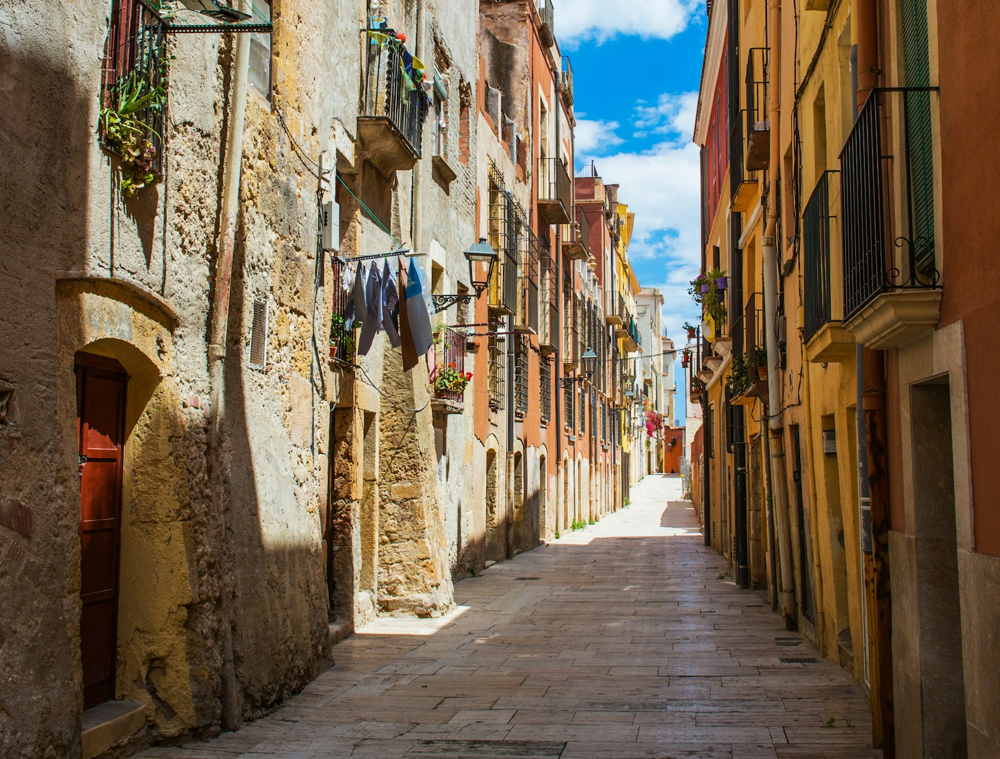

Proximitat
Visitem les finques i atenem en persona. No som un número de telèfon que ningú agafa.
Finques Cèsar va néixer el 1995 com una empresa familiar a Tarragona. Avui, en segona generació, mantenim la mateixa idea amb què vam començar: administrar amb proximitat, honestedat i l'ofici que només dóna el temps.

El que va començar com un despatx d'administració de finques s'ha convertit en una empresa multidisciplinària. Però el relleu generacional no ha canviat l'essència: aquí coneixem els clients pel nom i responem personalment.
Som col·legiats com a API (Agents de la Propietat Immobiliària) i com a Administradors de Finques, una garantia de professionalitat i responsabilitat en cada gestió.
Obrim les portes a Tarragona com a despatx d'administració de finques, amb les primeres comunitats de propietaris de la ciutat.
Ampliem cap a la gestió de lloguers i l'assessoria jurídica, oferint un servei integral sota un mateix sostre.
Incorporem la intermediació en compravenda, acompanyant els clients en tot el cicle de vida del seu immoble.
El relleu familiar combina l'experiència de sempre amb una mirada moderna, mantenint intacta la confiança de tres dècades.
Visitem les finques i atenem en persona. No som un número de telèfon que ningú agafa.
Comptes clares i comprensibles. El que veus és el que hi ha, sense sorpreses.
30 anys de coneixement del parc immobiliari de Tarragona i les seves particularitats.
A la versió final hi aniran les fotos i els noms reals de l'equip. Aquí mostrem com es presentarien.

Vine a conèixer-nos. Estem al centre de Tarragona i estarem encantats d'escoltar el teu cas.